Below is a description, with examples, of most 2D drawing primitives implemented in TGX.
- For additional details, look directly into the main header file Image.h
- Do not forget to check the examples located in the
/examples/ subdirectory of the library. In particular, the example TestPrimitives contains all the code listed below.
2D Drawing methods.
Filling the screen.
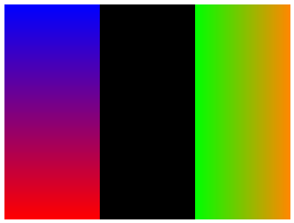
Code used to generate the image:
im.fillScreen(tgx::RGB32_Black);
auto im1 = im(0, 106, 0, 240);
im1.fillScreenVGradient(tgx::RGB32_Blue, tgx::RGB32_Red);
auto im2 = im(214, 320, 0, 240);
im2.fillScreenHGradient(tgx::RGB32_Green, tgx::RGB32_Orange);
Image class [MAIN CLASS FOR THE 2D API].
Definition: Image.h:143
Color in R8/G8/B8/A8 format.
Definition: Color.h:1176
Methods:
Reading/writing pixels
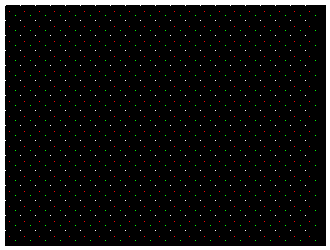
Code used to generate the image:
im.clear(tgx::RGB32_Black);
for (int i = 0; i < 310; i += 15) {
for (int j = 0; j < 230; j += 15){
im.drawPixel({ i, j }, tgx::RGB32_White);
}
}
const RGB32 RGB32_Red
Color red in RGB32 format.
const RGB32 RGB32_Green
Color green in RGB32 format.
Methods:
- drawPixel() : set the color of agiven pixel.
- drawPixelf() : set the color of agiven pixel, use floating point values position vector.
- readpixel() : read the color of a pixel.
- operator() : direct access to the pixel color memory location (read/write).
Flood-filling a region
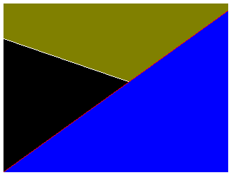
Code used to generate the image:
im.clear(tgx::RGB32_Black);
const RGB32 RGB32_Blue
Color blue in RGB32 format.
const RGB32 RGB32_White
Color white in RGB32 format.
const RGB32 RGB32_Olive
Color olive in RGB32 format.
Methods:
Blitting sprites
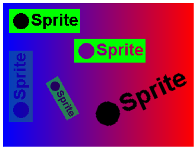
Code used to generate the image:
sprite.clear(tgx::RGB32_Green);
sprite.fillCircle({ 20, 20 }, 13, tgx::RGB32_Black, tgx::RGB32_Black);
im.fillScreenHGradient(tgx::RGB32_Blue, tgx::RGB32_Red);
im.blit(sprite, { 10, 10 });
im.blitRotated(sprite, { 10, 80 }, 270, 0.25f);
im.blitMasked(sprite, tgx::RGB32_Black, { 120,60 });
im.blitScaledRotated(sprite, { 60, 20 }, { 100, 160 }, 0.6f, 60.0f, 0.5f);
im.blitScaledRotatedMasked(sprite, tgx::RGB32_Green, { 60, 20 }, { 230, 160 }, 1.5f, -25.0f);
const RGB32 RGB32_Black
Color black in RGB32 format.
const ILI9341_t3_font_t font_tgx_Arial_Bold_20
Arial font (bold) 20pt.
Methods:
- blit(sprite, pos, opacity) : blit a sprite image onto the image.
- blitRotated(sprite, pos, angle, opacity) : rotate a sprite (by quarter turns) and then blit it onto the image.
- blitMasked(sprite, mask_color, pos, opacity) : blit a sprite onto the image with one color set as transparent.
- blitScaledRotated(sprite, pos_src, pos_dst, scale, angle, opacity) : rescale and rotate a sprite (by arbitrary angle) and then blit it onto the image.
- blitScaledRotatedMasked(sprite, mask_color, pos_src, pos_dst, scale, angle, opacity) : rescale and rotate a sprite (by arbitrary angle) and then blit it onto the image with one color set as transparent.
- Note
- All the blit methods above also have an 'advanced' version which takes as input a user-defined blending operator instead of the opacity parameter and can operate on sprites with a different color types than the destination image. see tgx::Image for details...
See also blitBackward() and methods for image copy/resizing/type conversion copyFrom(), copyReduceHalf(), reduceHalf() and convert()
drawing horizontal and vertical lines
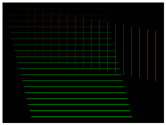
Code used to generate the image:
im.clear(tgx::RGB32_Black);
for (int i = 0; i < 20; i++) {
im.drawFastVLine({ i * 16, i * 3 }, 100, tgx::RGB32_Red, i / 20.0f);
}
Methods: use these methods when drawing parallel lines as they are faster that the 'general' line drawing methods.
drawing lines
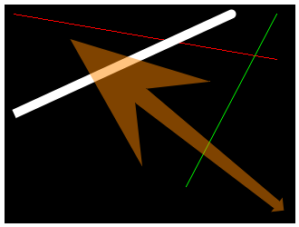
Code used to generate the image:
im.clear(tgx::RGB32_Black);
const RGB32 RGB32_Orange
Color orange in RGB32 format.
@ END_ROUNDED
rounded end.
Definition: Image.h:53
@ END_STRAIGHT
straight end.
Definition: Image.h:52
@ END_ARROW_1
tiny arrow head [extends = line thickness]
Definition: Image.h:54
@ END_ARROW_SKEWED_5
huge skewed arrow head [extends = 5 x line thickness]
Definition: Image.h:63
Methods:
- drawLine() : draw a basic straight line (single pixel thick, no anti-aliasing). Fastest method.
- drawLineAA() : draw a line segment with anti-aliasing (single pixel thick).
- drawThickLineAA() : draw a thick line with anti-aliasing and specify how the ends look like (rounded, flat, arrows...)
- drawWedgeLineAA() : draw a line segment with anti-aliasing with vraying thickness, specify how the ends look like (rounded, flat, arrows...)
drawing rectangles

Code used to generate the image:
im.clear(tgx::RGB32_Black);
im.drawRect({ 10,70,10,70 }, tgx::RGB32_White);
const RGB32 RGB32_Cyan
Color cyan in RGB32 format.
const RGB32 RGB32_Yellow
Color yellow in RGB32 format.
const RGB32 RGB32_Gray
Color gray in RGB32 format.
const RGB32 RGB32_Purple
Color purple in RGB32 format.
Methods:
See also drawThickRectAA(), drawThickRectAA(), drawThickRectAA(). These methods may be useful for smooth animations but usually not for static display (as rectangles egdes are parallel to pixel boundaries hence do not usually require anti-aliasing).
drawing rounded rectangles
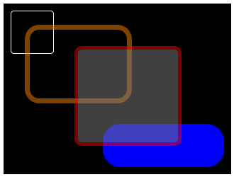
Code used to generate the image:
im.clear(tgx::RGB32_Black);
im.drawRoundRectAA({ 10,70,10,70}, 4, tgx::RGB32_White);
Methods:
- drawRoundRectAA() : draw a single pixel thick rectangle with rounded corners, with antiliasing.
- drawThickRoundRectAA() : draw a rounded corners rectangle with thick outline, with antiliasing.
- fillRoundRectAA() : draw a filled rectangle with rounded corners, with anti-aliasing.
- fillThickRoundRectAA() : draw a filled rectangle with rounded corners and thick outline of a different color, with anti-aliasing.
drawing triangles
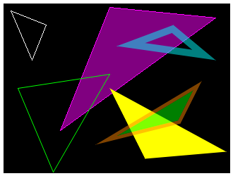
Code used to generate the image:
im.clear(tgx::RGB32_Black);
im.drawThickTriangleAA({ 160, 60 }, {240,30}, {300, 80}, 10,
tgx::RGB32_Cyan, 0.5f);
const RGB32 RGB32_Magenta
Color majenta in RGB32 format.
const RGB32 RGB32_Lime
Color lime in RGB32 format.
Methods:
drawing triangles (advanced)
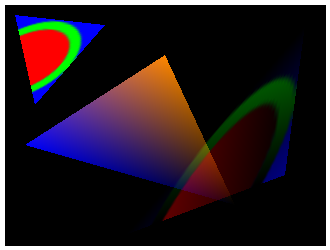
Code used to generate the image:
im.clear(tgx::RGB32_Black);
tex.clear(tgx::RGB32_Blue);
tex.fillThickCircleAA({ 25,25 }, 24, 5, tgx::RGB32_Red, tgx::RGB32_Green);
im.drawTexturedTriangle(tex, { 0,0 }, { 50, 0 }, { 50, 50 }, { 10, 10 }, { 100, 20 }, { 30, 100 });
im.drawTexturedGradientTriangle(tex, { 0,0 }, { 50, 0 }, { 50, 50 } , { 120, 230 }, { 300, 20 }, { 280, 170 },
tgx::RGB32_Red,
tgx::RGB32_Green,
tgx::RGB32_Blue, 0.5f);
Methods: these methods make use of the 3D rasterizer:
See also drawTexturedMaskedTriangle(), drawTexturedGradientMaskedTriangle() for additonal masking features.
drawing quads
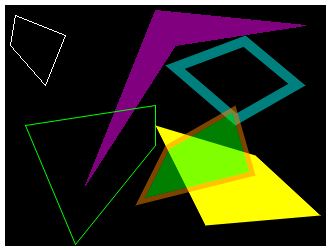
Code used to generate the image:
im.clear(tgx::RGB32_Black);
im.drawQuadAA({ 20,120 }, { 150, 100 }, { 150, 140 }, { 70, 239 },
tgx::RGB32_Green);
im.drawThickQuadAA({ 160, 60 }, { 240,30 }, { 300, 80 }, {230, 120}, 10,
tgx::RGB32_Cyan, 0.5f);
im.fillQuadAA({ 200, 220 }, { 315,210 }, {250, 150}, { 150, 120 },
tgx::RGB32_Yellow);
im.fillThickQuadAA({ 130,200 }, { 160, 140 }, { 230, 100 }, { 250, 170 } , 5,
tgx::RGB32_Lime,
tgx::RGB32_Orange, 0.5f);
Methods:
- drawQuad() : draw a simple quad. Fastest method.
- fillQuad() : draw a simple filled quad. Fastest method
- drawQuadAA() : draw a quad with single pixel thick outline, with anti-aliasing.
- drawThickQuadAA() : draw a quad with thick outline, with anti-aliasing.
- fillQuadAA() : draw a filled quad with anti-aliasing.
- fillThickQuadAA() : draw a filled quad with a thick outline of a different color, with anti-aliasing.
drawing quads (advanced)
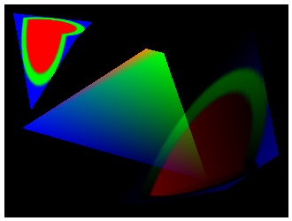
Code used to generate the image:
im.clear(tgx::RGB32_Black);
im.drawTexturedQuad(tex, { 0,0 }, { 50, 0 }, { 50, 50 }, { 0, 50 }, { 10, 10 }, { 100, 20 }, { 80, 40 }, {30, 120});
im.drawGradientQuad({ 20, 140 }, { 160, 50 }, {180, 55}, { 230, 200 },
tgx::RGB32_Blue,
tgx::RGB32_Orange,
tgx::RGB32_Green,
tgx::RGB32_Black);
im.drawTexturedGradientQuad(tex, { 0,0 }, { 50, 0 }, { 50, 50 }, { 0, 50 }, { 120, 230 }, { 280, 20 }, { 310, 170 }, {250,210},
tgx::RGB32_Red,
tgx::RGB32_Green,
tgx::RGB32_Blue,
tgx::RGB32_Navy,0.5f);
const RGB32 RGB32_Navy
Color navy in RGB32 format.
Methods: these methods make use of the 3D rasterizer:
See also drawTexturedMaskedQuad(), drawTexturedGradientMaskedQuad() for additonal masking features.
drawing polylines
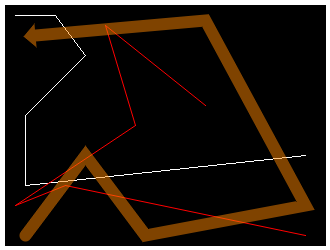
Code used to generate the image:
im.clear(tgx::RGB32_Black);
const tgx::iVec2 tabPoints1[] = { {10, 10}, {50, 10}, {80, 50}, {20, 110}, {20, 180}, {300, 150} };
im.drawPolyline(6, tabPoints1, tgx::RGB32_White);
const tgx::fVec2 tabPoints2[] = { {200, 100}, {100, 20}, {130, 120}, {10, 200}, {60, 180}, {300, 230} };
im.drawPolylineAA(6, tabPoints2, tgx::RGB32_Red);
const tgx::fVec2 tabPoints3[] = { {30, 30}, {200, 15}, {300, 200}, {140, 230}, {80, 150}, {20, 230} };
im.drawThickPolylineAA(6, tabPoints3, 12, tgx::END_ARROW_1, tgx::END_ROUNDED, tgx::RGB32_Orange, 0.5f);
Generic 2D vector [specializations iVec2, fVec2, dVec2].
Definition: Vec2.h:64
Methods:
drawing polygons
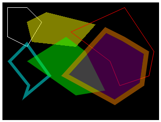
Code used to generate the image:
im.clear(tgx::RGB32_Black);
tgx::iVec2 tabPoints1[] = { {10, 10}, {50, 10}, {80, 40}, {50, 90}, {10, 70} };
im.drawPolygon(5, tabPoints1, tgx::RGB32_White);
tgx::iVec2 tabPoints2[] = { {90, 20}, {50, 40}, {60, 80}, {150, 90}, {190, 45} };
im.fillPolygon(5, tabPoints2, tgx::RGB32_Yellow, 0.5f);
tgx::fVec2 tabPoints3[] = { {140, 60}, {250, 10}, {310, 100}, {300, 150}, {240, 170}, {220, 120} };
im.drawPolygonAA(6, tabPoints3, tgx::RGB32_Red);
tgx::fVec2 tabPoints4[] = { {10, 120}, {50, 80}, {100, 150}, {40, 200}, {50, 170} };
im.drawThickPolygonAA(5, tabPoints4, 6, tgx::RGB32_Cyan, 0.5f);
tgx::fVec2 tabPoints5[] = { {50, 120}, {130, 70}, {170, 100}, {210, 180}, {150, 190} };
im.fillPolygonAA(5, tabPoints5, tgx::RGB32_Lime, 0.5f);
tgx::fVec2 tabPoints6[] = { {120, 150}, {210, 50}, {250, 70}, {300, 100}, {290, 170}, {230, 210} };
im.fillThickPolygonAA(6, tabPoints6, 10, tgx::RGB32_Purple, tgx::RGB32_Orange, 0.5f);
Methods:
drawing circles

Code used to generate the image:
im.clear(tgx::RGB32_Black);
im.drawCircle({50, 50}, 48, tgx::RGB32_White);
const RGB32 RGB32_Teal
Color teal in RGB32 format.
Methods:
drawing ellipses
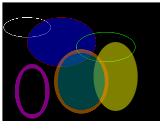
Code used to generate the image:
im.clear(tgx::RGB32_Black);
Methods:
drawing circle arcs and pies
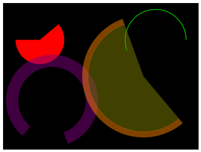
Code used to generate the image:
im.clear(tgx::RGB32_Black);
im.fillCircleSectorAA({ 60,60 }, 40, 50, 270, tgx::RGB32_Red);
Methods:
drawing Bezier curves
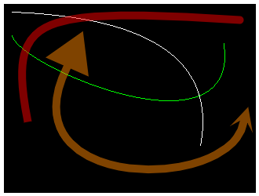
Code used to generate the image:
im.clear(tgx::RGB32_Black);
im.drawQuadBezier({ 10, 10 }, { 250, 180 }, {280, 20}, 1.0f,
true,
tgx::RGB32_White);
im.drawCubicBezier({ 10, 40 }, { 280, 50 }, { 20, 80 }, { 300, 200 },
true,
tgx::RGB32_Green);
im.drawThickQuadBezierAA({ 30, 150 }, { 300, 20 }, {0,0}, 2.0f, 10,
tgx::END_STRAIGHT,
tgx::END_ROUNDED,
tgx::RGB32_Red, 0.5f);
im.drawThickCubicBezierAA({ 80, 80 }, { 305, 150 }, { 0, 240 }, {290, 240}, 10,
tgx::END_ARROW_5,
tgx::END_ARROW_SKEWED_2,
tgx::RGB32_Orange, 0.5f);
@ END_ARROW_5
huge arrow head [extends = 5 x line thickness]
Definition: Image.h:58
@ END_ARROW_SKEWED_2
small skewed arrow head [extends = 2 x line thickness]
Definition: Image.h:60
Methods:
drawing splines
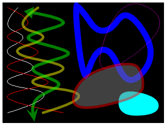
Code used to generate the image:
im.clear(tgx::RGB32_Black);
const tgx::iVec2 tabPoints1[] = { {30, 10}, {10, 40}, {40, 70}, {10, 100}, {60, 130}, {10, 160}, {80, 190}, {10, 220} };
im.drawQuadSpline(8, tabPoints1, true, tgx::RGB32_White);
const tgx::iVec2 tabPoints2[] = { {10, 10}, {50, 40}, {10, 70}, {70, 100}, {10, 130}, {90, 160}, {10, 190}, {120, 220} };
im.drawCubicSpline(8, tabPoints2, true, tgx::RGB32_Red);
const tgx::fVec2 tabPoints3[] = { {70, 10}, {40, 40}, {80, 70}, {30, 100}, {120, 130}, {60, 160}, {150, 190}, {80, 220} };
im.drawThickQuadSplineAA(8, tabPoints3, 5, tgx::END_ROUNDED, tgx::END_ROUNDED, tgx::RGB32_Yellow, 0.5f);
const tgx::fVec2 tabPoints4[] = { {60, 20}, {120, 40}, {50, 70}, {130, 100}, {60, 130}, {110, 160}, {70, 190}, {60, 220} };
im.drawThickCubicSplineAA(8, tabPoints4, 6, tgx::END_ARROW_3, tgx::END_ARROW_SKEWED_3, tgx::RGB32_Green, 0.5f);
const tgx::fVec2 tabPoints5[] = { {140, 20}, {160, 10}, {200, 50}, {250, 20}, {300, 100}, {250, 160}, {200, 100}, {160, 150} };
im.drawThickClosedSplineAA(8, tabPoints5, 12, tgx::RGB32_Blue);
const tgx::iVec2 tabPoints6[] = { {240, 10}, {310, 50}, {200, 130} };
im.drawClosedSpline(3, tabPoints6, tgx::RGB32_Magenta, 0.5f);
const tgx::fVec2 tabPoints7[] = { {300, 220}, {240, 220}, {240, 180}, {300, 190} };
im.fillClosedSplineAA(4, tabPoints7, tgx::RGB32_Cyan);
const tgx::fVec2 tabPoints8[] = { {150, 210}, {160, 150}, {250, 120}, {280, 150}, {260, 190} };
im.fillThickClosedSplineAA(5, tabPoints8, 5, tgx::RGB32_Gray ,tgx::RGB32_Red, 0.5f);
Methods:
drawing text
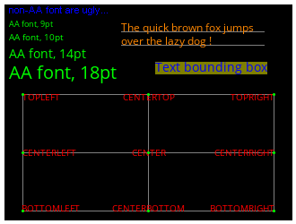
additional includes for the text fonts
Arial font for multiple for size ranging from 8pt to 96pt.
OpenSans font for multiple for size ranging from 8pt to 36pt.
Code used to generate the image:
im.clear(tgx::RGB32_Black);
im.drawText(
"non-AA font are ugly...", { 5, 10 },
font_tgx_Arial_8, tgx::RGB32_Blue);
const char * tbb = "Text bounding box";
im.fillRect(bb, tgx::RGB32_Yellow, 0.5f);
anchor_point = {20, 100 };
im.drawTextEx(
"TOPLEFT", anchor_point,
font_tgx_OpenSans_10, tgx::Anchor::TOPLEFT,
true,
true, tgx::RGB32_Red);
im.fillCircleAA(anchor_point,1.5, tgx::RGB32_Green);
anchor_point = { 300, 100 };
im.drawTextEx(
"TOPRIGHT", anchor_point,
font_tgx_OpenSans_10, tgx::Anchor::TOPRIGHT,
true,
true, tgx::RGB32_Red);
im.fillCircleAA(anchor_point, 1.5, tgx::RGB32_Green);
anchor_point = { 20, 230 };
im.drawTextEx(
"BOTTOMLEFT", anchor_point,
font_tgx_OpenSans_10, tgx::Anchor::BOTTOMLEFT,
true,
true, tgx::RGB32_Red);
im.fillCircleAA(anchor_point, 1.5, tgx::RGB32_Green);
anchor_point = { 300, 230 };
im.drawTextEx(
"BOTTOMRIGHT", anchor_point,
font_tgx_OpenSans_10, tgx::Anchor::BOTTOMRIGHT,
true,
true, tgx::RGB32_Red);
im.fillCircleAA(anchor_point, 1.5, tgx::RGB32_Green);
anchor_point = { 160, 100 };
im.drawTextEx(
"CENTERTOP", anchor_point,
font_tgx_OpenSans_10, tgx::Anchor::CENTERTOP,
true,
true, tgx::RGB32_Red);
im.fillCircleAA(anchor_point, 1.5, tgx::RGB32_Green);
anchor_point = { 160, 230 };
im.drawTextEx(
"CENTERBOTTOM", anchor_point,
font_tgx_OpenSans_10, tgx::Anchor::CENTERBOTTOM,
true,
true, tgx::RGB32_Red);
im.fillCircleAA(anchor_point, 1.5, tgx::RGB32_Green);
anchor_point = { 20, 165 };
im.drawTextEx(
"CENTERLEFT", anchor_point,
font_tgx_OpenSans_10, tgx::Anchor::CENTERLEFT,
true,
true, tgx::RGB32_Red);
im.fillCircleAA(anchor_point, 1.5, tgx::RGB32_Green);
anchor_point = { 300, 165 };
im.drawTextEx(
"CENTERRIGHT", anchor_point,
font_tgx_OpenSans_10, tgx::Anchor::CENTERRIGHT,
true,
true, tgx::RGB32_Red);
im.fillCircleAA(anchor_point, 1.5, tgx::RGB32_Green);
anchor_point = { 160, 165 };
im.drawTextEx(
"CENTER", anchor_point,
font_tgx_OpenSans_10, tgx::Anchor::CENTER,
true,
true, tgx::RGB32_Red);
im.fillCircleAA(anchor_point, 1.5, tgx::RGB32_Green);
const ILI9341_t3_font_t font_tgx_Arial_8
Arial font 8pt.
const ILI9341_t3_font_t font_tgx_OpenSans_14
OpenSans font 14pt.
const ILI9341_t3_font_t font_tgx_OpenSans_9
OpenSans font 9pt.
const ILI9341_t3_font_t font_tgx_OpenSans_10
OpenSans font 10pt.
const ILI9341_t3_font_t font_tgx_OpenSans_20
OpenSans font 20pt.
const ILI9341_t3_font_t font_tgx_OpenSans_12
OpenSans font 12pt.
Generic 2D Box [specializations iBox2 , fBox2, dBox2].
Definition: Box2.h:151
The TGX library support font using:
- Note
- tgx-font (https://github.com/vindar/tgx-font) contains a collection ILI9341_t3 v1 and v2 (antialiased) fonts that can be used directly with the methods below (and instructions on how to convert a ttf font to this format).
The following fonts are already packaged with TGX but must be included explicitely in the project when used:
- Arial (non AA font):
#include "font_tgx_Arial.h"
- Arial Bold (non AA font):
#include "font_tgx_Arial_Bold.h"
- OpenSans (AA font):
#include "font_tgx_OpenSans.h"
- OpenSans Bold (AA font):
#include "font_tgx_OpenSans_Bold.h"
- OpenSans Italic (AA font):
#include "font_tgx_OpenSans_Italic.h"
Each font above is available in fontsize: 8pt, 9pt, 10pt, 11pt, 12pt, 13pt, 14pt, 16pt, 18pt, 20pt, 24pt, 28pt, 32pt, 40pt, 48pt, 60pt, 72pt, 96pt.
Methods:
- drawText() : draw a text using a given font. simple "legacy" method
- drawTextEx() : draw a text using a given font. Extended method with anchor placement (c.f. tgx::Anchor).
- measureText() : compute the bounding box of a text (fast, does not draw it)
- measureChar() : compute the bounding box of a character (fast, does not draw it)
TGX extensions via external librairies
TGX implements bindings that makes it easy to use external libraries to add new capabilities to the Image class, such as displaying classic image format (PNG, GIF, JPEG) and TrueType fonts...
Drawing text with TrueType fonts
Install Takkao's OpenRenderFont library from https://github.com/takkaO/OpenFontRender/.
Simply include both libraries into the project to activate the bindings between TGX and OpenFontRender:
#include <OpenFontRender.h>
Now, we can bind any OpenFontRender object to an image with the method: Image::setOpenFontRender(ofr) and subsequently use the OpenFontRender library as usual. All texts written with ofr will automatically be drawn onto the selected image.
Example:
im.clear(tgx::RGB565_Black);
OpenFontRender ofr;
im.setOpenFontRender(ofr);
ofr.loadFont(NotoSans_Bold, sizeof(NotoSans_Bold))
ofr.setFontColor((uint16_t)tgx::RGB565_Yellow, (uint16_t)tgx::RGB565_Black);
ofr.setCursor(10, 20);
ofr.setFontSize(15);
ofr.cprintf("Hello World");
Color in R5/G6/B5 format.
Definition: Color.h:216
- Note
- A complete example is available in the subfolder
/examples/Teensy4/OpenFontRender_test/.
Check the OpenfontRender documentation for additional details.
Drawing PNG images
Install Bitbank2's PNGdec library from the Arduino library manager / platformio or directly from https://github.com/bitbank2/PNGdec/.
Simply include both libraries into the project to activate the bindings between TGX and PNGdec:
Now, we can bind any PNG decoder object tgx images by providing it with the generic callback TGX_PNGDraw and then we can susequently decode PNGs using the Image::PNGDecode() method.
Example:
im.clear(tgx::RGB565_Black);
PNG png;
png.openRAM((uint8_t*)octocat_4bpp, sizeof(octocat_4bpp), TGX_PNGDraw);
im.PNGDecode(png, {20, 10}, 0.5f);
- Note
- A complete example is available in the subfolder
/examples/Teensy4/PNG_test/.
Check the PNGdec documentation for additional details.
Drawing JPEG images
Install Bitbank2's JPEGDEC library from the Arduino library manager / platformio or directly from https://github.com/bitbank2/JPEGDEC.
Simply include both libraries into the project to activate the bindings between TGX and JPEGDEC:
Now, we can bind any JPEGDEC decoder object tgx images by providing it with the generic callback TGX_JPEGDraw and then we can susequently decode JPEGs using the Image::JPEGDecode() method.
Example:
im.clear(tgx::RGB565_Black);
JPEGDEC jpeg;
jpeg.openRAM((uint8_t*)batman, sizeof(batman), TGX_JPEGDraw);
im.JPEGDecode(png, {20, 10}, JPEG_SCALE_HALF, 0.5f);
- Note
- A complete example is available in the subfolder
/examples/Teensy4/JPEG_test/.
Check the JPEGDEC documentation for additional details.
Drawing GIF images
Install Bitbank2's AnimatedGIF library from the Arduino library manager / platformio of directly from https://github.com/bitbank2/AnimatedGIF
Simply include both libraries into the project to activate the bindings between TGX and AnimatedGIF:
Now, we can bind any AnimatedGIF decoder object to tgx images by providing it with the generic callback TGX_GIFDraw and then we can susequently decode GIFs using the Image::GIFplayFrame() method.
This method simply wraps around the playFrame() method fom the AnimateGIF library and can be called repeatedly to display successives frame in case of an animation.
Example:
im.clear(tgx::RGB565_Black);
AnimatedGIF gif;
gif.open((uint8_t*)earth_128x128, sizeof(earth_128x128), TGX_GIFDraw);
im.GIFplayFrame(gif, { 20, 10 });
- Note
- A complete example is available in the subfolder
/examples/Teensy4/GIF_test/.
Check the AnimatedGIf documentation for additional details.